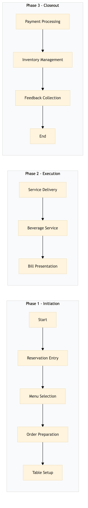

| Role | Steps |
|---|---|
| Front Desk Agent | 1.1 3.1 3.3 |
| Waiter/Waitress | 1.2 2.1 3.2 |
| Bartender | 2.2 3.2 |
| Kitchen Staff | 1.3 |
| Step | Name | Role | System | Input | Output | KPI | Dec? | Exc? | Pain Point / Risk |
|---|---|---|---|---|---|---|---|---|---|
| 1.1 | Reservation Entry | Front Desk Agent | Oracle OPERA Cloud | Guest reservation details | Updated reservation in Oracle OPERA Cloud | Less than 2 minutes per reservation entry | N | Y | Handling last-minute changes or cancellations |
| 1.2 | Menu Selection | Waiter/Waitress | Oracle OPERA Cloud, IDeaS G3 RMS | Guest preferences | Selected menu items | Less than 5 minutes per table for menu selection | Y | N | Managing dietary restrictions and allergies |
| 1.3 | Order Preparation | Kitchen Staff | Oracle MICROS Simphony | Menu items from waiters/waitresses | Prepared food items | Less than 20 minutes per order | N | Y | Handling rush orders and kitchen delays |
| 1.4 | Table Setup | Bartender/Waiter/Waitress | Oracle OPERA Cloud | Reservation details | Set up table with appropriate decor and amenities | Less than 3 minutes per table setup | N | Y | Managing large groups or special requests |
| 2.1 | Service Delivery | Waiter/Waitress | Oracle OPERA Cloud, IDeaS G3 RMS | Prepared food items from kitchen staff | Delivered food to guests | Less than 5 minutes per table for service delivery | Y | N | Handling guest complaints or special requests |
| 2.2 | Beverage Service | Bartender | Oracle MICROS Simphony, Oracle OPERA Cloud | Guest beverage orders | Served beverages to guests | Less than 3 minutes per drink order | Y | N | Managing high-volume bar service |
| 2.3 | Bill Presentation | Waiter/Waitress | Oracle OPERA Cloud, IDeaS G3 RMS | Completed meal and beverage orders | Presented bill to guests | Less than 2 minutes per table for bill presentation | Y | N | Handling disputes or special billing requests |
| 3.1 | Payment Processing | Front Desk Agent | Oracle OPERA Cloud, SynXis CRS | Guest payment | Processed payment and updated reservation status | Less than 2 minutes per payment transaction | N | Y | Handling cash transactions or credit card issues |
| 3.2 | Inventory Management | Bartender/Kitchen Staff | Oracle MICROS Simphony, Birchstreet Procurement | Consumed inventory items | Updated inventory levels and procurement orders | Less than 10 minutes per day for inventory review | N | Y | Managing perishable goods or supply chain disruptions |
| 3.3 | Feedback Collection | Front Desk Agent | Oracle OPERA Cloud, Marriott Bonvoy CRM | Guest feedback | Collected and stored guest feedback in CRM | Less than 1 minute per feedback entry | N | Y | Encouraging guests to provide detailed feedback |
This process outlines the Food & Beverage Service Standards at a full-service Marriott hotel, focusing on restaurant and bar operations. It ensures consistent quality of service and efficient management of food and beverage offerings.